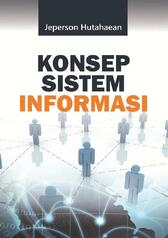
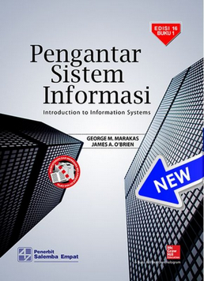

Pengertian Sistem Informasi dan Contoh Penerapan pada Dunia Indurstri
Teknologi dan manusia saat ini menjadi satu kesatuan dan menjadi dua hal yang tidak dapat dipisahkan, di mana
kedua faktor tersebut berkaitan dan dapat digabungkan menjadi sebuah sistem. Istilah populer untuk saat ini
dinamakan dengan sistem informasi.
Berikut adalah buku tentang Sistem Informasi


Buku sistem Informasi